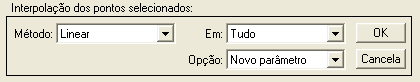
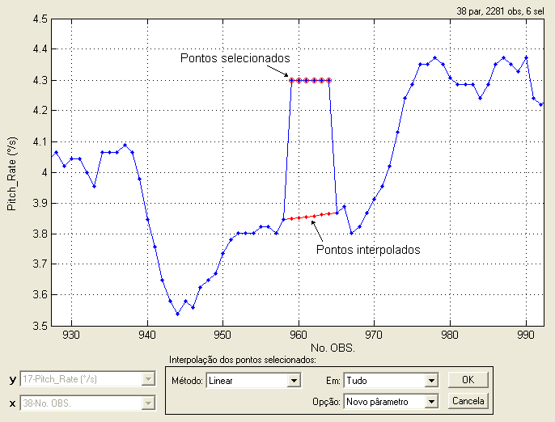

| Menu Funções |
|
Interpolar
Pontos Selecionados
Essa função
permite interpolar os pontos
selecionados de um parâmetro. É uma função útil para
eliminar “spikes” e para
revalidar pontos inválidos (“NaN”).
Selecione os
pontos que deseja interpolar usando as
ferramentas de seleção e desseleção
de pontos e
clique no menu “Funções
► Filtragem e
reamostragem ... ► Interpolar pontos selecionados” ou no botão  na
Barra de Ferramentas.
na
Barra de Ferramentas.
A Caixa de
Diálogo solicitará que o usuário indique os
parâmetros para interpolação:

● No campo
“Método”, indique o método de interpolação
desejado. Os métodos disponíveis são:
|
Opção |
Descrição |
|
Linear |
Os pontos selecionados serão interpolados linearmente entre os pontos não selecionados adjacentes. |
|
Vizinho |
Aos pontos selecionados será atribuído o valor dos pontos não selecionados mais próximos. |
|
Spline |
Os pontos selecionados serão interpolados pelo método de "splines". |
|
Cúbico |
Os pontos selecionados serão interpolados pelo método cúbico. |
|
Repetir |
Aos pontos selecionados será atribuído o valor do ponto não selecionado imediatamente anterior. |
|
Especificar |
Aos pontos selecionados será atribuído um valor especificado pelo usuário. |
|
Continuar |
Dos pontos selecionados será removida a diferença com relação ao ponto não selecionado imediatamente anterior, eliminando descontinuidades. |
|
Regredir |
Dos pontos selecionados será removida a diferença com relação ao ponto não selecionado imediatamente posterior, eliminando descontinuidades de trás para frente. |
● Caso o método
“Especificar” seja selecionado, surgirá
um campo “Valor” para que o usuário indique o valor desejado.
●
Caso o método "Continuar" seja selecionado, surgirá
um campo “Dif. inic.” para que o usuário indique como deve ser a
diferença inicial entre os pontos selecionados e os pontos anteriores.
As opções são:
|
Opção |
Descrição |
|
Zero |
O primeiro ponto do trecho selecionado terá o mesmo valor que o ponto não selecionado imediatamente anterior (repete o valor). |
|
Variação anterior |
O primeiro ponto do trecho selecionado será a extrapolação da variação de valor dos dois pontos não selecionados imediatamente anteriores (repete a variação). |
●
Caso o método "Regredir" seja selecionado, surgirá
um campo “Dif. final” para que o usuário indique como deve ser a
diferença final entre os pontos selecionados e os pontos seguintes.
As opções são:
|
Opção |
Descrição |
|
Zero |
O último ponto do trecho selecionado terá o mesmo valor que o ponto não selecionado imediatamente posterior (repete o valor de trás para frente). |
|
Variação seguinte |
O último ponto do trecho selecionado será a extrapolação da variação de valor dos dois pontos não selecionados imediatamente posteriores (repete a variação de trás para frente). |
● No campo
“Em”, indique em que parte do parâmetro
deseja aplicar a interpolação. As opções são:
|
Opção |
Descrição |
|
Tudo |
Todos os pontos
selecionados do parâmetro são interpolados. |
|
Intervalo |
Apenas os
pontos selecionados que estiverem dentro do intervalo selecionado são
interpolados. Pontos fora dos limites do gráfico serão ignorados. |
● No campo
“Opção”, indique se deseja criar um novo
parâmetro ou substituir o atual com os dados modificados.
O resultado da
interpolação será mostrado temporariamente
conforme as seleções realizadas:

Para revalidar
pontos inválidos (“NaN”), é necessário
primeiro selecioná-los usando a
função “Dados ► Selecionar ... ► Pontos inválidos”, ou pode-se usar a função "Interpolar pontos inválidos".
Ao clicar “OK”,
o usuário deverá fornecer o nome do novo
parâmetro ou confirmar a substituição do parâmetro original, dependendo
da
seleção do campo “Opção”.


No primeiro
caso, após definir o nome e pressionar “OK”, o novo
parâmetro com os pontos interpolados será acrescentado à penúltima
posição das
matrizes de trabalho (antes de “No.OBS.”).
No segundo caso, ao clicar “Sim” o parâmetro será atualizado.
Caso a função
seja chamada enquanto a função Selecionar
/
Desselecionar
pontos esteja habilitada, será executada a opção de interpolação linear
em todo o intervalo de dados e com substituição do parâmetro atual.
Essa funcionalidade visa agilizar a remoção manual de "spikes" dos
dados.
| Nota: Parâmetros
com escala cíclica, como ângulos de Euler,
podem ser incorretamente interpolados entre observações que apresentam
descontinuidade (por exemplo, proa acima de 360° volta para o início da
escala). Para evitar esse efeito, os parâmetros devem ser alterados
para escala contínua (função “Alterar
intervalo circular”)
antes da interpolação e então retornados para a escala
original. |
| |
Filtragem
de sinal |
Interpolar
pontos inválidos |
|